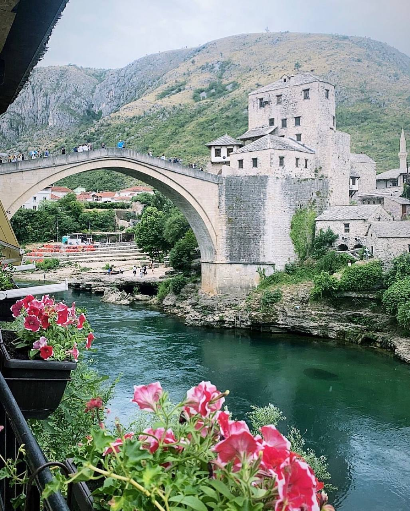
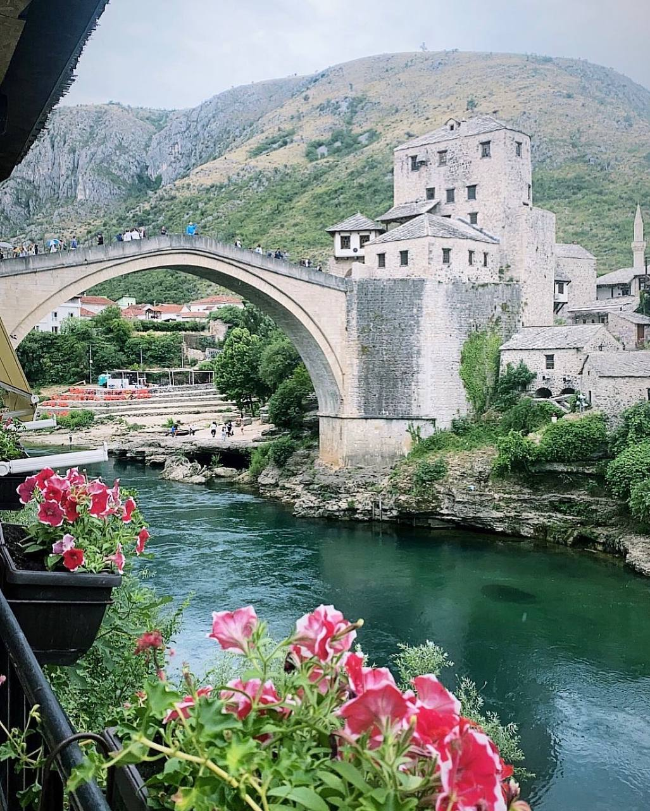

Hem
Kort om mig
Jag heter Shirin och är 26 år gammal. Jag är utbildad sjuksköterska och arbetar i dagsläget på sjukhus. Jag har dock valt att byta yrke, och området som har fångat mitt intresse är IT.
Mina intressen
- Resa och utforska världen
- Shoppa kläder och smycken
- Baka och äta god mat
- Hemindredning
- Träna
En utav mina absolut prioriterade intressen är som ovannämnt att resa runt världen. Jag älskar att utforska jordens fantastiska natur och därmed fotografera dessa för att föreviga de minnen jag skapat och de stunder jag fick uppleva under dessa resor. Jag kommer därför i nästa avsnitt dela med mig några foton jag har tagit under mina senaste resor.
Foto galleri


 

Ni kanske undrar varför jag valde att lämna mitt nuvarande yrke och göra karriär inom ett annat område?
Jo, anldeningen till at jag valde att byte yrke är bland annat, arbetsmiljön och arbetsbelastningen i första hand. Det är väldigt roligt atta arbeta som sjuksköterska, att hjälpa och vårda människor har alltid varit något jag velat göra sedan barndomen. Vilket jag har lyckats med under totalt 8 år. Men nu känner jag att det är dags att ta mig vidare till nya utmaningar. Vården är väldigt belastad, främst sjukvårdspersonalen, som inte har bra arbetsvillkor. Jag sökte runt om vad som skulle passa mig och jag fann it. Jag tycker att it är ett väldigt kreativt och givande yrke samt är väldigt roligt. Av den anldeningen är jag idag här.
För att komma i kontakt med mig klicka här